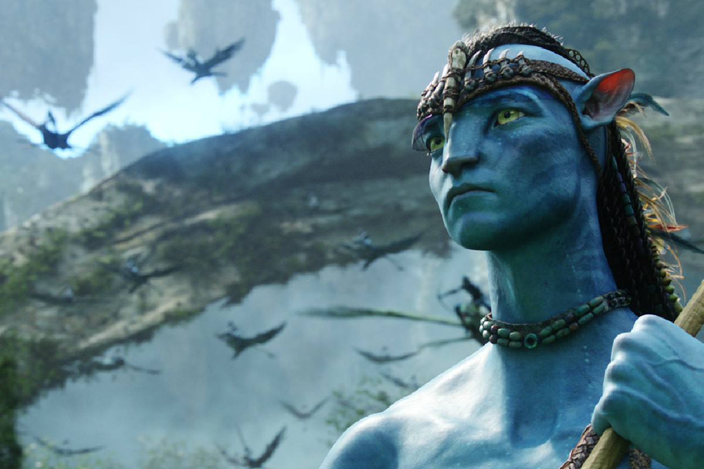
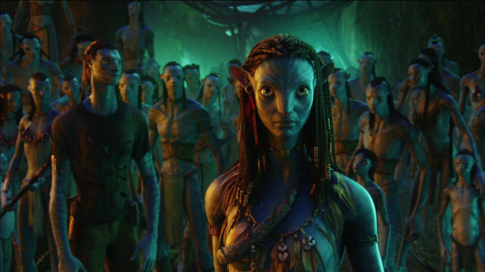

  Avatar è un film del 2009 diretto da James Cameron. Nel 2154 la compagnia interplanetaria terrestre RDA vuole ottenere il monopolio sui giacimenti unobtainium del pianeta Pandora, mondo primordiale coperto di foreste pluviali e abitato dai Na’vi. Dal momento che l’atmosfera del pianeta è tossica per l’essere umano, gli scienziati hanno creato degli Avatar, grazie alla fusione del DNA umano e di quello Na’vi, che possono essere controllati a distanza per mezzo di una speciale capsula tecnologica. Per prendere possesso del giacimento più grande di Pandora, che si trova sotto l’insediamento dei nativi Omaticaya, il colonnello Quaritch (Stephen Lang) chiede all’ex marine invalido Jake Sully (Sam Worthington) di infiltrarsi tra i Na’vi, al fine di fornire informazioni rilevanti per il futuro attacco delle truppe terrestri. A contrastare lo spirito conquistatore e violento del colonello c’è la dottoressa Grace Augustine (Sigourney Weaver), che vorrebbe entrare in possesso dei giacimenti grazie ad un’azione diplomatica e pacifica. A causa di alcuni fraintendimenti, tuttavia, la linea adottata dalla dottoressa si è rivela inefficace e Quaritch ha ottenuto il consenso per procedere con la forza. Jake inizia la sua missione ma, poco dopo aver preso il controllo del suo Avatar, si trova a dover affrontare un feroce e immenso animale predatore, che lo separa dal resto del gruppo. Solo e sperduto su un pianeta che non conosce, Jake è salvato dalla principessa Omaticaya, Neytiri (Zoe Saldana). I nativi consentono al nuovo arrivato di soggiornare presso il loro villaggio, permettendogli di conoscere a fondo la loro cultura e il particolare rapporto simbiotico che intrattengono con la natura. Ben presto, Jake inizia ad ammirare lo stile di vita Na’vi e a provare reali sentimenti per Neytiri. L’idillio, tuttavia, è bruscamente interrotto da Quaritch, deciso a completare la missione a sterminare il popolo di Pandora…